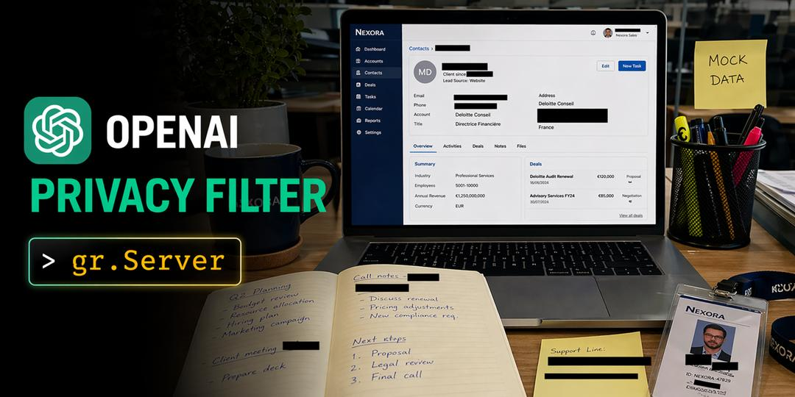

OpenAI Privacy Filter adalah model open-source (Apache 2.0) yang mendeteksi informasi pribadi (PII) dalam teks.
Bisa deteksi 8 kategori dalam sekali proses:
Privacy Filter punya 1.5 miliar parameter — tapi cuma 50 juta yang aktif per forward pass (Mixture of Experts).
Konteknya 128.000 token — bisa proses dokumen panjang dalam sekali jalan.
Sudah capai state-of-the-art di benchmark PII-Masking-300k.
Drop file PDF/DOCX — semua PII ter-highlight otomatis per kategori.
Upload screenshot — PII langsung di-blur dengan black bars otomatis.
Seperti Pastebin tapi dengan redaksi PII otomatis. Dapatkan 2 URL:
Multilingual — Spanyol, Prancis, Mandarin, Hindi, dan lainnya.
Semua 3 app dibangun di atas gradio.Server — backend yang menggabungkan:
Semua app punya pola yang sama:
@server.api
Model call → Gradio queue → ZeroGPU
@server.get / @server.post
FastAPI routes — HTML, file lookup, cheap reads
Satu endpoint, dua SDK (browser + Python), zero duplicated code.
Open-source (Apache 2.0) artinya siapa pun bisa deploy sendiri:
Dapatkan update AI & tech setiap hari — curated untuk Indonesia
Ikuti @arief.drippython scripts/carousel-capture.py